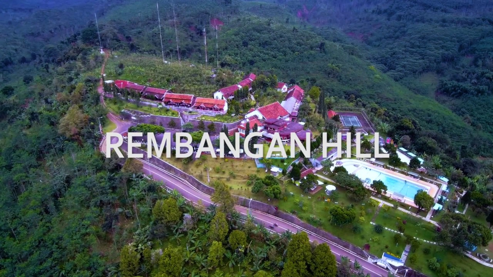

Pantai Papuma Jember, Pesonanya Bisa Bikin Keblinger
Pesona yang Ditawarkan Pantai Papuma Jember
dibuat oleh Alexander 3 bulan lalu
Liburan memang merupakan aktivitas yang paling menyenangkan untuk dilakukan. Setelah kerja ataupun dikejar tugas hampir seminggu penuh tentu kamu nggak mau dong menyia-nyiakan waktu ‘bebas’ untuk sekadar jalan-jalan? Contoh kota di Jawa Timur yang bisa didatangi untuk ‘kabur’ sebentar adalah Jember. Salah satu rekomendasi destinasi wisata di Jember adalah Pantai Papuma.
Jember memiliki beberapa pantai yang sangat mempesona dan Instagenic. Tentunya bagi kamu anak millenial yang rindu akan bising ombak dan barisan perahu nelayan beserta pasir putih yang menggoda untuk dimainkan kaki-kaki telanjang, maka bisa berkunjung ke Pantai Papuma Jember. Berikut selengkapnya pemaparan dari Alexander de' Fadhilio, salah satu kontributor Jemberin.kuy.
Lokasi Pantai Papuma Jember

Papuma memiliki singkatan dari ‘Pantai Pasir Putih Malikan’. Pantai yang terletak di Desa Lojejer, Kabupaten Jember, Jawa Timur ini memiliki daya tarik yang cukup luar biasa bagi para pengunjung. Pantai yang terletak ±45 km dari pusat kota ini juga memiliki ombak yang cukup besar karena merupakan bagian dari pantai selatan yang terkenal akan ombak ganasnya itu.
Biaya Masuk ke Pantai Papuma

Kamu juga tidak perlu khawatir dengan budget liburan yang dimiliki, karena hanya perlu merogoh kocek untuk tarif biaya masuk sebesar Rp15.000 saat weekday dan Rp17.500 saat weekend. Dengan harga segitu kamu dapat bermain sepuas-puasnya selama seharian. Oiya, khusus bagi kamu yang ingin menginap jangan khawatir. Pantai Papuma juga menyediakan cottage kecil yang dapat kamu sewa dengan range harga Rp300.000-Rp500.000 per malam.
Aktivitas Seru di Pantai Papuma

Selain itu kamu juga bisa menghabiskan waktumu untuk bermain banana boat yang sewaktu-waktu ada. Atau memilih melipir menikmati berbagai jenis seafood di warung yang ada di sepanjang area pantai. For your information, destinasi wisata air di Jember ini juga termasuk cagar alam hutan tropis sehingga jangan kaget jika banyak kera yang akan kamu jumpai di setiap jalannya.
Setelah merasa capek, kamu dapat bersantai dengan bermainkan pasir putih duduk menikmati sunset. Ditambah lagi dengan suara alam yang merdu sembari melihat kapal nelayan yang mulai menepi. Dijamin stres seharian yang kamu alami bakalan hilang.
Mitos di Pantai Papuma

Namun siapa sangka di balik keindahannya, Pantai Papuma juga masih dibesarkan oleh beberapa mitos yang di percaya penduduk lokal. Tentunya kamu sebagai pengunjung juga perlu tahu dong agar lebih berhati-hati saat berkunjung. Mitos yang berkembang ini berdasar pada adanya beberapa pengunjung yang terseret ombak dan tenggelam, yang dipercayai sebagai tumbal ratu pantai selatan.
Selain itu terdapat Goa Lawa atau dalam bahasa Indonesia ‘Goa Kelelawar’ yang ada di antara dua batu karang dan hanya terlihat saat air laut sedang surut, menurut sebuah mitos merupakan tempat tinggal dari Dewi Sri Wulan yang merupakan putri dari penguasa pantai selatan, selain itu Goa Lawa juga dipercayai sebagai tempat Kyai Mataram bersemedi. Ada juga beberapa pulau kecil tidak berpenghuni di sekitar Pantai Papuma yang katanya banyak di huni oleh spesies ular berbisa.
Nah, tentunya kamu boleh percaya atau tidak. Namun sebagai pengunjung sudah sewajarnya dong kamu harus mawas diri dan jangan lupa untuk berlaku sopan. Jadi, atur jadwalmu dari sekarang dan jangan lupa ajak sahabat, pacar ataupun keluarga untuk menghabiskan waktu bermain dan bercanda bersama. Happy holiday! Next

Wisata Alam S J88, Kembaran Kalibiru Teluk Love Jember, Tempat Menyendiri di Puncak Kabupaten Jember Sembari Menanti Cinta Sejati
Maret 2017 di "Wisata Alam" September 2017 di "Wisata Alam"